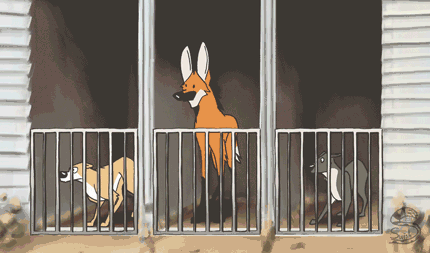

Overview
The maned wolf is the largest canid of South America. Its
markings resemble those of foxes, but it is neither a fox
nor a wolf. It is the only species in the genus Chrysocyon
(meaning “golden dog”).
This mammal is found in open and semiopen habitats,
especially grasslands with scattered bushes and trees, in
south, central-west, and southeastern Brazil, Paraguay,
northern Argentina, and Bolivia east zand north of the
Andes, and far southeastern Peru (Pampas del Heath only). It
is very rare in Uruguay, possibly being displaced completely
through loss of habitat.
The International Union for
Conservation of Nature lists it as near threatened, while it
is considered a vulnerable species by the Brazilian
Institute of Environment and Renewable Natural Resources.
"Maned Wolf Makes Some Noise"
Physical Description
The maned wolf bears minor similarities to the red fox,
although it belongs to a different genus. The average adult
weighs 23 kg (51 lb) and stands 90 cm (35 in) tall at the
shoulder, has a head-body length of 100 cm (39 in) with the
tail adding another 45 cm (18 in).Its ears are large and
long (7 inches).
The maned wolf is the tallest of the wild canids; its long
legs are likely an adaptation to the tall grasslands of its
native habitat.Fur of the maned wolf may be reddish-brown to
golden orange on the sides with long, black legs, and a
distinctive black mane. The coat is marked further with a
whitish tuft at the tip of the tail and a white “bib”
beneath the throat. The mane is erectile and typically is
used to enlarge the wolf’s profile when threatened or when
displaying aggression. Melanistic maned wolves do exist, but
are rare.
The first photograph of a black adult maned wolf
was taken by a camera trap in northern Minas Gerais in
Brazil in 2013.
The maned wolf also is known for the distinctive odor of its
territory markings, which has earned it the nickname “skunk
wolf”.
Image of an alert maned wolf.)
Biology
Genetically, the maned wolf has 38 chromosomes, with a
karyotype similar to that of other canids. Evidence suggests
that 15,000 years ago, the species suffered a reduction in
its genetic diversity, called the bottleneck effect.
However, its diversity is still greater than that of other
canids.
The skull can be identified by its reduced carnassials, small upper incisors and long canine teeth. Like other canids, it has 42 teeth.The skull also features a prominent sagittal crest.
Image of maned wolf skull

Wolf species size comparison
Ecology
Both female and male maned wolves use their urine to
communicate, e.g. to mark their hunting paths or the places
where they have buried hunted prey.The urine has a very
distinctive odor, which some people liken to hops or
cannabis. The responsible substance very likely is a
pyrazine, which also occurs in both plants. (At the
Rotterdam Zoo, this smell once set the police on a hunt for
cannabis smokers.The preferred habitat of the maned wolf
includes grasslands, scrub prairies, and forests.
The most significant threat to Maned Wolf populations is the drastic reduction of habitat, especially due to conversion to agricultural land.In addition, habitat fragmentation causes isolation of subpopulations.
Many Maned Wolves are killed on the nation's roads. Highways border many of the Conservation Units of the Brazilian cerrado, and drivers often do not respect speed limits. Reserves close to urban areas often have problems with domestic dogs. These dogs pursue and may kill Maned Wolves and can also be an important source of disease.
Image of scrub prairie and grassland
Behavior
Unlike most wild canids (such as the gray wolf, the African
hunting dog, or the dhole), the maned wolf is a solitary
animal and does not form packs.It typically hunts alone,
usually between sundown and midnight, rotating its large
ears to listen for prey animals in the grass. They tap the
ground with a front foot to flush out the prey and pounce to
catch it. They kill prey by biting on the neck or back, and
shaking the prey violently if necessary.
Monogamous pairs may defend a shared territory around 30 km2
(12 sq mi), although outside of mating, the individuals may
meet only rarely. The territory is crisscrossed by paths
that they create as they patrol at night. Several adults may
congregate in the presence of a plentiful food source, for
example, a fire-cleared patch of grassland that would leave
small vertebrate prey exposed while foraging.
Image of maned wolf head
Taxonomy
Although the maned wolf displays many fox-like
characteristics, it is not closely related to foxes. It
lacks the elliptical pupils found distinctively in foxes.
The maned wolf’s evolutionary relationship to the other
members of the canid family makes it a unique animal.
Electrophoretic studies did not link Chrysocyon with any of
the other living canids studied. One conclusion of this
study is that the maned wolf is the only species among the
large South American canids that survived the late
Pleistocene extinction. Fossils of the maned wolf from the
Holocene and the late Pleistocene have been excavated from
the Brazilian Highlands.
Electrophoretic studies did not link Chrysocyon with any of
the other living canids studied. One conclusion of this
study is that the maned wolf is the only species among the
large South American canids that survived the late
Pleistocene extinction. Fossils of the maned wolf from the
Holocene and the late Pleistocene have been excavated from
the Brazilian Highlands.
The maned wolf is not closely related to any other living
canid. It is not a fox, wolf, coyote, dog, or jackal, but a
distinct canid, though, based only on morphological
similarities, it previously had been placed in the Canis and
Vulpes genera.Its closest living relative is the bush dog
(genus Speothos), and it has a more distant relationship to
other South American canines (the short-eared dog, the
crab-eating fox, and the zorros or Lycalopex).
Tree diagram of species of canis
Relationship with Humans
Generally, the maned wolf is shy and flees when alarmed, so
it poses little direct threat to humans. Popularly, the
maned wolf is thought to have the potential of being a
chicken thief. It once was considered a similar threat to
cattle and sheep, although this now is known to be false.
Historically, in a few parts of Brazil, these animals were
hunted for some body parts, notably the eyes, that were
believed to be good-luck charms. Since its classification as
a vulnerable species by the Brazilian government, it has
received greater consideration and protection.
They are threatened by habitat loss and being run over by
automobiles. Feral and domestic dogs pass on diseases to
them, and have been known to attack them.
The species occurs in several protected areas, including the
national parks of Caraça and Emas in Brazil. The maned wolf
is well represented in captivity and has been bred
successfully at many zoos,particularly in Argentina, North
America (part of a Species Survival Plan) and Europe (part
of a European Endangered Species Programme). In 2012, a
total of 3,288 maned wolves was kept at more than 300
institutions worldwide. The Smithsonian National Zoo Park
has been working to protect maned wolves for nearly 30
years, and coordinates the collaborative, interzoo maned
wolf Species Survival Plan of North America, which includes
breeding maned wolves, studying them in the wild, protecting
their habitat, and educating people about them.
Maned wolf interacting with zookeeper

Cartoon Maned wolf in a race gif